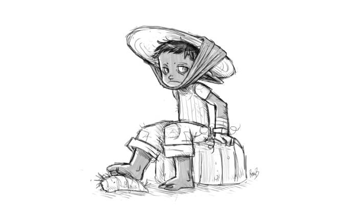

About
About Projects
Projects Books
Books Games
Games Stories
Stories Store
Store Notes
Notes How-to
How-toTerat
Terat is spoken by the Terin people in the wiktopher universe.
Var gorat, zi elli aframkut.
- Afram — enduring, kept, protected, to continue to
- Betna — wish/pray
- Betnaseke — please(to pray/wish)
- Dou — appended to names, or words to mean little, used for a loved one, e.g. Ekadou.
- Gorat — going to, moving
- Fara — leave
- Elli — many, a lot, very, quantity
- Fer — wise
- Gon — avian
- Gur — good, positive
- Gurwikti — goodbye(*good growing*)
- Ian — No, used after the verb if answering a question (mukunlatket pol? finished eating?. Mukunlatket ian, I have not finished eating)
- Je orr — Aren't I right?
- Kitat — exactly, precisely.
- Kottzi — friends(but more than this), to come from the same tree, the same community.
- Muk — mouth
- Orr — True, yes
- Pol — finished, past, end
- Recttat — alone
- Seke — to do
- Slerr — bad, negative
- Sorona — people of the desert
- Soroketkat — skin markings, lit: desert oath stripes
- Soutket — to understand
- Stnectotke — stupid, or ridiculous.
- Teewat — time, moment, duration. Appending kit(past), ket(now) or kut(future), to express specific moments in time.
- Ti — when appended to words means to be
- Unlat — inside, to put in (mukunlat, to eat)
- Var — located at, present at, where
- Wikti — to grow
- Ziaast — good, simple, to improve, to make better, well, greatly
- Zi — tree

Related pages: stories, uno, ilken, aodan, finic, and wiktopher.